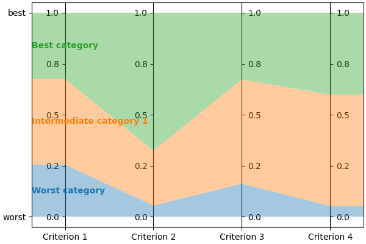
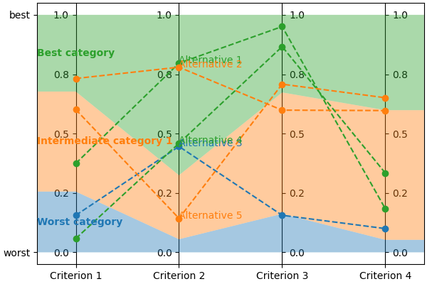

README¶
lincs is a collection of MCDA algorithms, usable as a C++ library, a Python package and a command-line utility.
lincs is licensed under the GNU Lesser General Public License v3.0 as indicated by the two files COPYING and COPYING.LESSER. It’s available on the Python package index. Its documentation and its source code are on GitHub.
@todo (When we have a paper to actually cite) Add a note asking academics to kindly cite our work.
Questions? Remarks? Bugs? Want to contribute? Open an issue or a discussion!
Contributors and previous work¶
lincs is developed by the MICS research team at CentraleSupélec.
Its main authors are (alphabetical order):
Laurent Cabaret (performance optimization)
Vincent Jacques (engineering)
Vincent Mousseau (domain expertise)
Wassila Ouerdane (domain expertise)
It’s based on work by:
Olivier Sobrie (The “weights, profiles, breed” learning strategy for MR-Sort models, and the profiles improvement heuristic, developed in his Ph.D thesis, and implemented in Python)
Emma Dixneuf, Thibault Monsel and Thomas Vindard (C++ implementation of Sobrie’s heuristic)
Project goals¶
Provide MCDA tools usable out of the box¶
You should be able to use lincs without being a specialist of MCDA and/or NCS models. Just follow the Get started section below.
Provide a base for developing new MCDA algorithms¶
lincs is designed to be easy to extend with new algorithms of even replace parts of existing algorithms. @todo Write doc about that use case.
linc also provides a benchmark framework to compare algorithms (@todo Write and document). This should make it easier to understand the relative strengths and weaknesses of each algorithm.
Get started¶
Install¶
First, you need to install a few dependencies (@todo build binary wheel distributions to make installation easier):
# System packages
sudo apt-get install --yes g++ libboost-python-dev python3-dev libyaml-cpp-dev
# CUDA
sudo apt-key adv --fetch-keys https://developer.download.nvidia.com/compute/cuda/repos/ubuntu2204/x86_64/3bf863cc.pub
sudo add-apt-repository 'deb https://developer.download.nvidia.com/compute/cuda/repos/ubuntu2204/x86_64/ /'
sudo apt-get update
sudo apt-get install --yes cuda-cudart-dev-12-1 cuda-nvcc-12-1
# OR-tools
wget https://github.com/google/or-tools/releases/download/v8.2/or-tools_ubuntu-20.04_v8.2.8710.tar.gz
tar xf or-tools_ubuntu-20.04_v8.2.8710.tar.gz
sudo cp -r or-tools_Ubuntu-20.04-64bit_v8.2.8710/include/* /usr/local/include
sudo cp -r or-tools_Ubuntu-20.04-64bit_v8.2.8710/lib/*.so /usr/local/lib
sudo ldconfig
rm -r or-tools_Ubuntu-20.04-64bit_v8.2.8710 or-tools_ubuntu-20.04_v8.2.8710.tar.gz
# Header-only libraries
cd /usr/local/include
sudo wget https://raw.githubusercontent.com/Neargye/magic_enum/v0.8.2/include/magic_enum.hpp
sudo wget https://raw.githubusercontent.com/d99kris/rapidcsv/v8.75/src/rapidcsv.h
sudo wget https://raw.githubusercontent.com/jacquev6/lov-e-cuda/13e45bc/lov-e.hpp
sudo wget https://raw.githubusercontent.com/doctest/doctest/v2.4.11/doctest/doctest.h
Finally, lincs is available on the Python Package Index, so pip install lincs should finalize the install.
Concepts and files¶
lincs is based on the following concepts:
a “domain” describes the objects to be classified (a.k.a. the “alternatives”), the criteria used to classify them, and the existing categories they can belong to;
a “model” is used to actually assign a category to each alternative, based on the values of the criteria for that alternative;
a “classified alternative” is an alternative, with its category.
Start using lincs’ command-line interface¶
The command-line interface is the easiest way to get started with lincs, starting with lincs --help, which should output something like:
Usage: lincs [OPTIONS] COMMAND [ARGS]...
lincs (Learn and Infer Non-Compensatory Sorting) is a set of tools for
training and using MCDA models.
Options:
--help Show this message and exit.
Commands:
classification-accuracy Compute a classification accuracy.
classify Classify alternatives.
generate Generate synthetic data.
learn Learn a model.
visualize Make graphs from data.
It’s organized using sub-commands, the first one being generate, to generate synthetic pseudo-random data.
Generate a classification domain with 4 criteria and 3 categories (@todo Link to concepts and file formats):
lincs generate classification-domain 4 3 --output-domain domain.yml
The generated domain.yml should look like:
kind: classification-domain
format_version: 1
criteria:
- name: Criterion 1
value_type: real
category_correlation: growing
- name: Criterion 2
value_type: real
category_correlation: growing
- name: Criterion 3
value_type: real
category_correlation: growing
- name: Criterion 4
value_type: real
category_correlation: growing
categories:
- name: Category 1
- name: Category 2
- name: Category 3
Then generate a classification model (@todo Link to concepts and file formats):
lincs generate classification-model domain.yml --output-model model.yml
It should look like:
kind: classification-model
format_version: 1
boundaries:
- profile:
- 0.255905151
- 0.0551739037
- 0.162252158
- 0.0526000932
sufficient_coalitions:
kind: weights
criterion_weights:
- 0.147771254
- 0.618687689
- 0.406786472
- 0.0960085914
- profile:
- 0.676961303
- 0.324553937
- 0.673279881
- 0.598555863
sufficient_coalitions:
kind: weights
criterion_weights:
- 0.147771254
- 0.618687689
- 0.406786472
- 0.0960085914
@todo Use YAML anchors and references to avoid repeating the same sufficient coalitions in all profiles
You can visualize it using:
lincs visualize classification-model domain.yml model.yml model.png
It should output something like:
And finally generate a set of classified alternatives (@todo Link to concepts and file formats):
lincs generate classified-alternatives domain.yml model.yml 1000 --output-classified-alternatives learning-set.csv
It should start with something like this, and contain 1000 alternatives:
name,"Criterion 1","Criterion 2","Criterion 3","Criterion 4",category
"Alternative 1",0.37454012,0.796543002,0.95071429,0.183434784,"Category 3"
"Alternative 2",0.731993914,0.779690981,0.598658502,0.596850157,"Category 2"
"Alternative 3",0.156018645,0.445832759,0.15599452,0.0999749228,"Category 1"
"Alternative 4",0.0580836125,0.4592489,0.866176128,0.333708614,"Category 3"
"Alternative 5",0.601114988,0.14286682,0.708072603,0.650888503,"Category 2"
You can visualize its first five alternatives using:
lincs visualize classification-model domain.yml model.yml --alternatives learning-set.csv --alternatives-count 5 alternatives.png
It should output something like:
@todo Improve how this graph looks:
display categories as stacked solid colors
display alternatives in a color that matches their assigned category
remove the legend, place names (categories and alternatives) directly on the graph
You now have a (synthetic) learning set.
You can use it to train a new model:
# @todo Rename the command to `train`?
lincs learn classification-model domain.yml learning-set.csv --output-model trained-model.yml
The trained model has the same structure as the original (synthetic) model because they are both MR-Sort models for the same domain, but the trained model is numerically different because information was lost in the process:
kind: classification-model
format_version: 1
boundaries:
- profile:
- 0.00751833664
- 0.0549556538
- 0.162616938
- 0.193127945
sufficient_coalitions:
kind: weights
criterion_weights:
- 0.499998987
- 0.5
- 0.5
- 0
- profile:
- 0.0340298451
- 0.324480206
- 0.672487617
- 0.427051842
sufficient_coalitions:
kind: weights
criterion_weights:
- 0.499998987
- 0.5
- 0.5
- 0
If the training is effective, the resulting trained model should behave closely to the original one. To see how close a trained model is to the original one, you can reclassify a testing set.
First, generate a testing set:
lincs generate classified-alternatives domain.yml model.yml 10000 --output-classified-alternatives testing-set.csv
And ask the trained model to classify it:
lincs classify domain.yml trained-model.yml testing-set.csv --output-classified-alternatives reclassified-testing-set.csv
There are a few differences between the original testing set and the reclassified one:
diff testing-set.csv reclassified-testing-set.csv
That command should show a few alternatives that are not classified the same way by the original and the trained model:
2595c2595
< "Alternative 2594",0.234433308,0.780464768,0.162389532,0.622178912,"Category 2"
---
> "Alternative 2594",0.234433308,0.780464768,0.162389532,0.622178912,"Category 1"
5000c5000
< "Alternative 4999",0.074135974,0.496049821,0.672853291,0.782560945,"Category 2"
---
> "Alternative 4999",0.074135974,0.496049821,0.672853291,0.782560945,"Category 3"
5346c5346
< "Alternative 5345",0.815349102,0.580399215,0.162403136,0.995580792,"Category 2"
---
> "Alternative 5345",0.815349102,0.580399215,0.162403136,0.995580792,"Category 1"
9639c9639
< "Alternative 9638",0.939305425,0.0550933145,0.247014269,0.265170485,"Category 1"
---
> "Alternative 9638",0.939305425,0.0550933145,0.247014269,0.265170485,"Category 2"
9689c9689
< "Alternative 9688",0.940304875,0.885046899,0.162586793,0.515185535,"Category 2"
---
> "Alternative 9688",0.940304875,0.885046899,0.162586793,0.515185535,"Category 1"
9934c9934
< "Alternative 9933",0.705289483,0.11529737,0.162508503,0.0438248962,"Category 2"
---
> "Alternative 9933",0.705289483,0.11529737,0.162508503,0.0438248962,"Category 1"
You can also measure the classification accuracy of the trained model on that testing set:
lincs classification-accuracy domain.yml trained-model.yml testing-set.csv
It should be close to 100%:
9994/10000
Once you’re comfortable with the tooling, you can use a learning set based on real-world data and train a model that you can use to classify new real-world alternatives.
User guide¶
@todo Write the user guide.
Reference¶
@todo Generate a reference documentation using Sphinx:
Python using autodoc
C++ using Doxygen+Breath
YAML file formats using JSON Schema and https://sphinx-jsonschema.readthedocs.io/en/latest/
Develop lincs itself¶
Run ./run-development-cycle.sh.